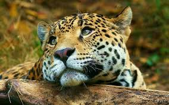
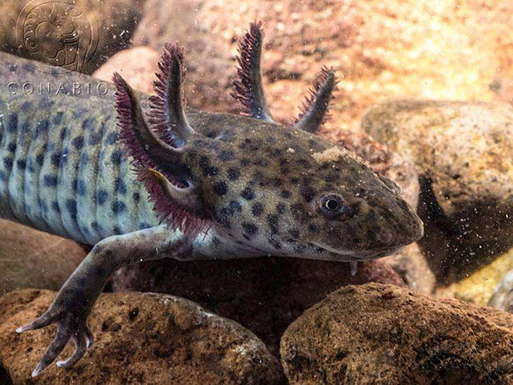
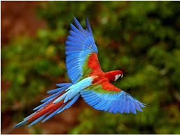
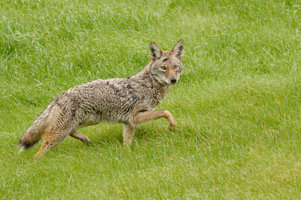
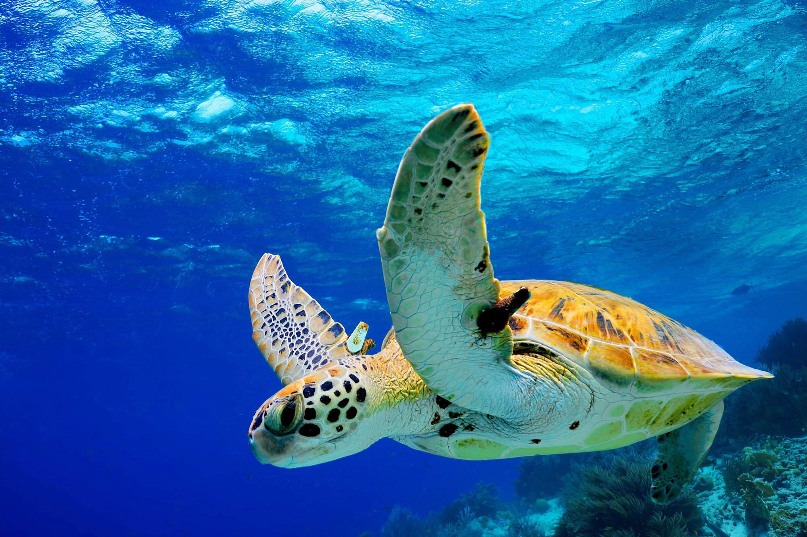

Fauna de México
México es uno de los países con mayor biodiversidad del mundo. Su gran variedad de climas y ecosistemas permite que una inmensa cantidad de especies habiten en su territorio.
Ejemplos representativos:

Jaguar: El mayor felino de América, vive en la selva del sur de México.

Ajolote: Anfibio endémico de los lagos de Xochimilco, capaz de regenerar partes de su cuerpo.

Guacamaya Roja: Ave colorida que habita en las selvas tropicales del sureste.

Coyote: Mamífero adaptado a distintos hábitats del norte y centro de México.

Tortuga marina: Varias especies anidan en las costas del Pacífico y el Caribe.
Esta riqueza natural representa un gran valor ecológico, cultural y científico que debemos proteger.